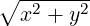
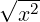
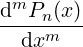

| Up | Next | Prev | PrevTail | Tail |
REDUCE knows that the following represent mathematical functions that can take arbitrary scalar expressions as their argument(s).
Trigonometric, hyperbolic and exponential functions:
The trigonometric functions listed above take arguments given in radians; degree-based versions are described below.
Inverse trigonometric, hyperbolic and exponential functions:
where log is the natural logarithm, log10 is the logarithm to base 10, and logb has two arguments of which the second is the logarithmic base. Note on the CSL GUI and other graphical interfaces the inverse trigonometric and hyperbolic functions are output as arcsin etc.
REDUCE defines the identifier ln to be an abstract operator with no properties; see section 2.7. You can use it any way you want. One way to use the identifier ln to represent the natural logarithm (for input only) is to execute the command
The degree variants of the trigonometric functions and their inverses:
The names of the degree-based functions are those of the normal trig functions with the letter d appended, for example sind, cosd and tand denote the sine, cosine and tangent repectively and their corresponding inverse functions are asind, acosd and atand. The secant, cosecant and cotangent functions and their inverses are also supported and, indeed, are treated more as first class objects than their corresponding radian-based functions which are often converted to expressions involving sine and cosine by some of the standard REDUCE simplifications rules.
These degree-based functions are probably best regarded as functions defined for real values only, but complex arguments are supported for completeness. The numerical evaluation routines are fairly comprehensive for both real and complex arguments. However, few simplifications occur for trigd functions with complex arguments.
The range of the principal values returned by the inverse functions is consistent with those of the corresponding radian-valued functions. More precisely, for asind, atand and acscd the (closure of the) range is [−90,90] whilst for acosd, acotd and asecd the (closure of the) range is [0,180]. In addition the operator atan2d is the degree valued version of the two argument inverse tangent function which returns an angle in the half-open interval (−180,180] in the correct quadrant depending on the signs of its two arguments. For x > 0, atan2d(y, x) returns the same numerical value as atand(y/x). If x = 0 then ±90 is returned depending on the sign of y.
Miscellaneous functions:
The function hypot takes two arguments x and y and returns the value

but, when the switch rounded is ON, problems with rounding and possible overflow for large numerical arguments are reduced.The function atan2 also takes two arguments y and x respectively and returns a value of arctan(y∕x) in the range (−π,π] taking account of the signs of its two arguments and avoiding an error if x = 0.
The operator norm returns the modulus (or absolute value or norm) of a complex number when the switches rounded and complex are on. When the switches rounded and complex are both on, arg will return the argument in radians of the complex number supplied as its parameter — supplying zero as the parameter causes an error to be raised. With a real numerical value as parameter, it returns 0 or π when the value is positive or negative respectively. argd is similar to arg, but returns the argument expressed in degrees. Currently these are purely numeric operators; when rounded is off they basically return the input expression (perhaps with their parameter simplified). Example
REDUCE knows various elementary identities and properties of these functions. For example:
The derivatives of all the elementary functions except hypot are also known to the system. Beside these identities, there are a lot of simplifications for elementary functions defined in REDUCE as rulelists. In order to view these, the SHOWRULES operator can be used, e.g.
For further simplification, especially of expressions involving trigonometric functions, see section 8.7.
Functions not listed above may be defined in the special functions package SPECFN.
The user can add further rules for the reduction of expressions involving these operators by using the let command.
In many cases it is desirable to expand product arguments of logarithms, or collect a sum of logarithms into a single logarithm. Since these are inverse operations, it is not possible to provide rules for doing both at the same time and preserve the REDUCE concept of idempotent evaluation. As an alternative, REDUCE provides two switches expandlogs and combinelogs to carry out these operations. Both are off by default, and are subject to the value of the switch precise. This switch is on by default and prevents modifications that may be false in a complex domain. Thus to expand log(3*y) into a sum of logs, one can say
whereas to expand log(x*y) into a sum of logs, one needs to say
To combine this sum into a single log:
These switches affect the logarithmic functions log10 (base 10) and logb (arbitrary base) as well.
At the present time, it is possible to have both switches on at once, which could lead to infinite recursion. However, an expression is switched from one form to the other in this case. Users should not rely on this behavior, since it may change in the future.
The current version of REDUCE does a poor job of simplifying surds. In particular, expressions involving the product of variables raised to non-integer powers do not usually have their powers combined internally, even though they are printed as if those powers were combined. For example, the expression
will print as
but will have an internal form containing the two exponentiated terms. If you now subtract sqrt(x) from this expression, you will not get zero. Instead, the confusing form
will result. To combine such exponentiated terms, the switch combineexpt should be turned on.
The square root function can be input using the name sqrt, or the power operation ^(1/2). On output, unsimplified square roots are normally represented by the operator sqrt rather than a fractional power. With the default system switch settings, the argument of a square root is first simplified, and any divisors of the expression that are perfect squares taken outside the square root argument. The remaining expression is left under the square root. Thus the expression
becomes
Note that such simplifications can cause trouble if A is eventually given a value that is a negative number. If it is important that the positive property of the square root and higher even roots always be preserved, the switch precise should be set on (the default value). This causes any non-numerical factors taken out of surds to be represented by their absolute value form. With precise on then, the above example would become
However, this is incorrect in the complex domain, where

is not identical to |x|. To avoid the above simplification, the switch precise_complex should be set on (default is off). For example:yields the output
If the switch rounded is on, any of the elementary functions
when given a numerical argument has its value calculated to the current degree of floating point precision. In addition, real (non-integer valued) powers of numbers will also be evaluated.
If the complex switch is turned on in addition to rounded, these functions will also calculate a real or complex result, again to the current degree of floating point precision, if given complex arguments. For example, with on rounded,complex;
For log and the inverse trigonometric and hyperbolic functions which are multi-valued, the principal value is returned. The branch cuts chosen (except for acot and acotd) are now those recommended by W. Kahan ([Kah87])
The exception for acot and acotd is necessary as elsewhere in REDUCE acot(−z) is
taken to be π − acot(z) rather than −acot(z), and acotd(−z) = 180 − acotd(z). The
branch cuts are:
| log, sqrt: | {r∣r ∈ ℝ ∧ r < 0} |
| asin, asind, acos, acosd: | {r∣r ∈ ℝ ∧ (r > 1 ∨ r < −1)} |
| acsc, acscd, asec, asecd: | {r∣r ∈ ℝ ∧ r≠0 ∧ r > −1 ∧ r < 1} |
| atan, atand, acot, acotd: | {r ∗ i∣r ∈ ℝ ∧ (r > 1 ∨ r < −1)} |
| asinh: | {r ∗ i∣r ∈ ℝ ∧ (r ≥ 1 ∨ r ≤−1)} |
| acsch: | {r ∗ i∣r ∈ ℝ ∧ r≠0 ∧ r ≥−1 ∧ r ≤ 1} |
| acosh: | {r∣r ∈ ℝ ∧ r < 1} |
| asech: | {r∣r ∈ ℝ ∧ (r > 1 ∨ r < 0)} |
| atanh: | {r∣r ∈ ℝ ∧ (r > 1 ∨ r < −1)} |
| acoth: | {r∣r ∈ ℝ ∧ r > −1 ∧ r < 1} |
The functions in this section are either built-in or are autoloading functions from the package SPECFN. On the CSL GUI and other graphical interfaces many of the functions will be output in standard form; for example BesselJ(nu,x) will be output as Jν(x) and Fresnel_S(u) as S(u). For most of the non-unary special functions in this section (Lerch_Phi is an exception), the last parameter is the ‘main’ variable and the earlier parameters are the order (or orders) usually rendered in the literature as subscipts and/or superscripts.
The information provided below is fairly rudimentary; more complete information may be found in the SPECFN package. Quick Reference Tables are also available.
Integral Functions:
All these functions are unary; the first six are the exponential, logarithmic, sine and cosine integrals and their hyperbolic counterparts. Erf, Fresnel_S and Fresnel_C are the error function and the Fresnel sine and cosine integrals respectively.
Beta, Gamma and Related Functions:
The Gamma function is unary whilst Beta is binary. The binary function igamma and ternary function ibeta are the (normalised) incomplete Gamma and Beta functions respectively. The unary function psi is sometimes known as the Digamma function and the binary function Polygamma with integer first parameter n is the nth derivative of the function psi.
Bessel and Related Functions:
All of these functions are binary, their first argument being the order of the function.
For the special functions below, a second Quick Reference Table is available.
Airy Functions:
These are all unary functions.
Kummer, Lommel, Struve and Whittaker Functions:
The Struve functions are both binary whilst the remaining ones are all ternary.
Riemann Zeta and Lambert’s W Function:
These are both unary functions.
Polylogarithms and Related Functions
These take one, two and three arguments respectively.
Associated Legendre functions:
These functions take four and six arguments respectively.
The polynomial functions below are from the non-core package SPECFN and for the most part are not autoloading. This package needs to be loaded before they may be used with the command:
The names of the REDUCE operators for the polynomial functions below are mostly built by adding a P to the name of the polynomial, e.g. EulerP implements the Euler polynomials.
The information in this subsection is fairly rudimentary; more complete information may
be found in the SPECFN package.
A Quick Reference Table is available for all the polynomial functions below.
Some well-known orthogonal polynomials are available:
The first three of these functions are binary and the first argument should be an integer specifying the order of the required polynomial. The functions LegendreP and LaguerreP may be used either as binary operators or ternary ones and represent the corresponding ‘basic’ and associated functions respectively. Finally the Gegenbauer polynomials are ternary whilst the Jacobi polynomials are quaternary.
Most definitions are equivalent to those in [AS72], except for the ternary associated Legendre functions:
|
Pn(m)(x) = (−1)m(1 − x2)m∕2  . |
These are sometimes mistakenly referred to as associated Legendre polynomials, but they are only polynomial when m is even.
Fibonacci Polynomials are computed by the binary operator FibonacciP, where FibonacciP(n,x) returns the nth Fibonacci polynomial in the variable x. If n is an integer, it will be
evaluated using the recursive definition:
| F0(x) = 0; F1(x) = 1; Fn(x) = xFn−1(x) + Fn−2(x). |
Euler Polynomials are computed by the binary operator EulerP, where EulerP(n,x) returns the nth Euler polynomial in the variable x.
Bernoulli Polynomials are computed by the binary operator BernoulliP, where BernoulliP(n,x) returns the nth Bernoulli polynomial in the variable x.
All the functions documented in this subsection are autoloading functions from the package ELLIPFN. On the CSL GUI and other graphical interfaces these functions will be output in standard mathematical form; for example jacobisn(x,k) will be output as sn(x,k) and weierstrass(x,omega1,omega3) as ℘(x,ω1,ω3).
Jacobi Elliptic Functions:
and their three reciprocals
and six quotients
All are binary functions with the second argument being the modulus. The binary function jacobiam is the amplitude.
Complete and Incomplete Elliptic Integrals of the First & Second Kinds:
The function ellipticE may take one or two arguments to denote the complete and Legendre’s form of the incomplete elliptic integrals of the second kind respectively. The complete integral of the first kind ellipticK is unary whilst ellipticF, jacobiE and jacobiZeta are binary and represent the incomplete integral of the first kind, Jacobi’s form of the incomplete elliptic integral of the second kind and Jacobi’s Zeta function respectively.
Jacobi’s Theta Functions:
are all binary functions with the second argument being the ‘parameter’ τ, the nome q being given by q = exp(iπτ)
Weierstrassian Elliptic Functions:
are all ternary functions with the second and third arguments of the first six functions being the the lattice period parameters ω1 and ω3. The remaining two functions are alternative versions of the Weierstrass functions with the second and third arguments being the lattice invariants g2 and g3.
Inverse Elliptic Functions:
These are all binary functions with the second argument being the modulus k. They are the inverses of the corresponding Jacobi elliptic functions jacobisn, jacobicn etc.(wrt their first argument).
For the elliptic functions above a Quick Reference Table is available.
| Up | Next | Prev | PrevTail | Front |